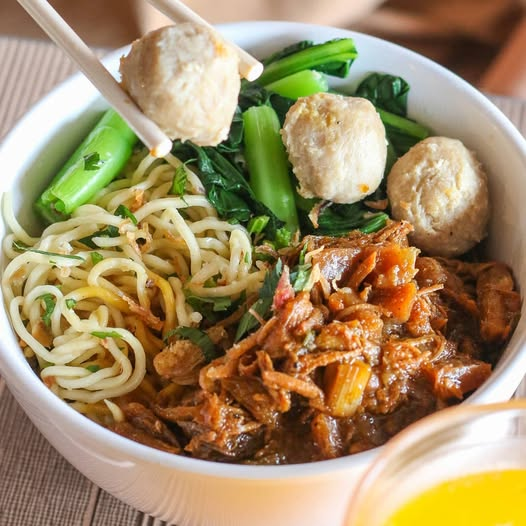

Indonesian Chicken Noodle with Meatballs (Mie Ayam Bakso)

Description
Mie Ayam Bakso is a popular Indonesian street food made with egg noodles,
seasoned chicken topping, and meatballs served in a warm savory broth. It
is commonly sold by street vendors and loved for its rich flavor and
comforting taste.
Ingredients
For the noodles:
- 200g egg noodles
- 1 tablespoon vegetable oil
- 1 tablespoon sweet soy sauce (kecap manis)
For the chicken topping:
- 200g chicken thigh, diced
- 2 cloves garlic, minced
- 2 tablespoons sweet soy sauce
- 1 teaspoon soy sauce
- 1 teaspoon oyster sauce
- 1/2 teaspoon ground white pepper
- 1 tablespoon vegetable oil
- 100ml water
For the broth:
- 500 ml chicken broth
- 2 cloves garlic, crushed
- Salt to taste
- White pepper to taste
Additional toppings:
- 4-6 beef meatballs (bakso)
- Chopped green onions
- Fried shallots
- Bok choy or green vegetables
- Chili sauce(optional)
Steps
-
Prepare the chicken topping
Heat vegetable oil in a pan. Saute the minced garlic until fragrant. Add
diced chicken and cook until the chicken changes color.
-
Season the chicken
Add sweet soy sauce, oyster sauce, white pepper, and water. Stir well
and cook until the chicken is fully cooked and slightly caramelized.
-
Prepare the broth
In a pot,bring the chicken broth to a boil. Add crushed garlic, salt,
and white pepper. Let it simmer for a few minutes.
-
Cook the noodles
Boil the egg noodles according to the package instructions. Drrain the
noodles and mix them with vegetable oil and sweet soy sauce.
-
Prepare the meatballs and vegetabless
Boil the meatballs and bok choy in hot water for a few minutes until
cooked.
-
Assamble the bowl
Place the noodle in a bowl. Add the chicken topping, meatballs, and
vegetabless.
-
Serve
Pour the hot broth into the bowl. Top with chopped green onions and
fried shallots. Serve with chili sauce if desired.
Back to main